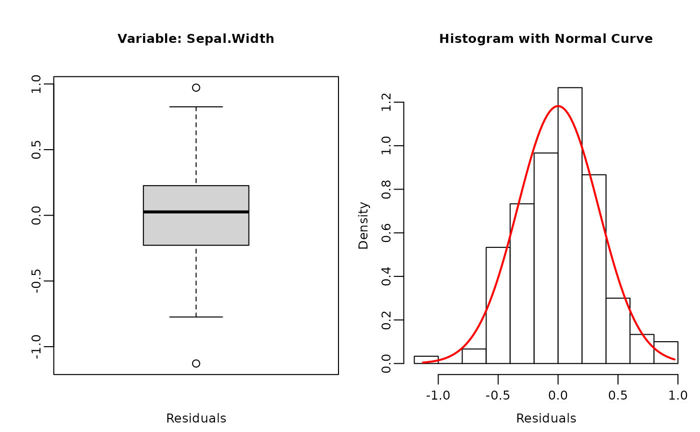
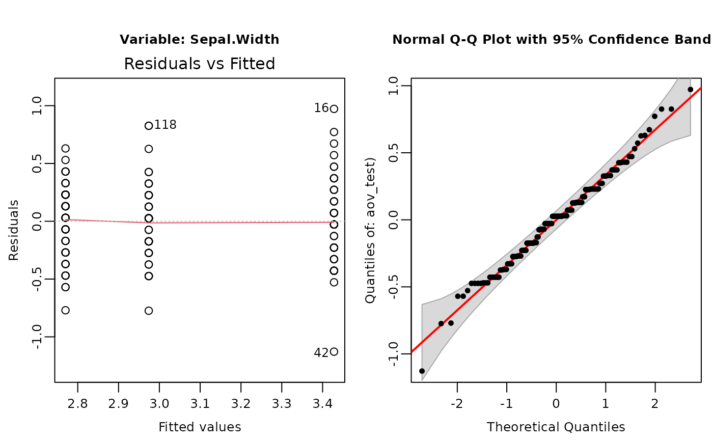
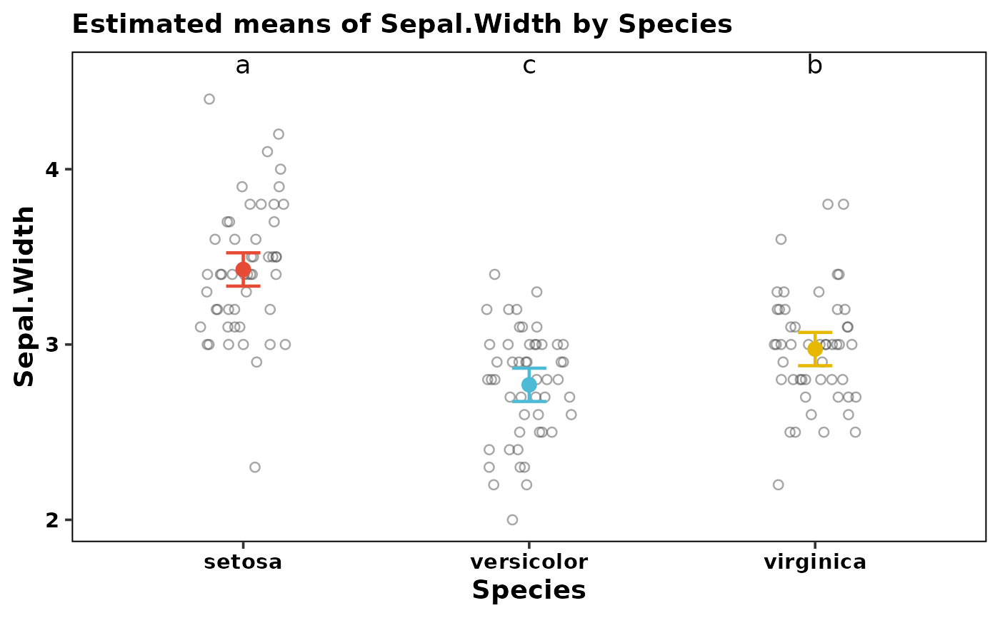
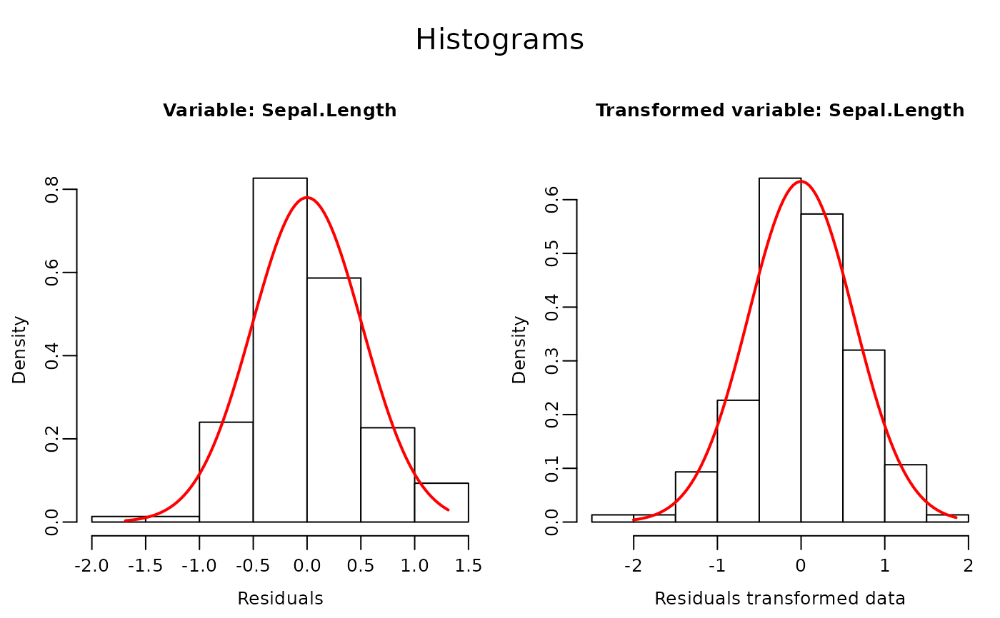
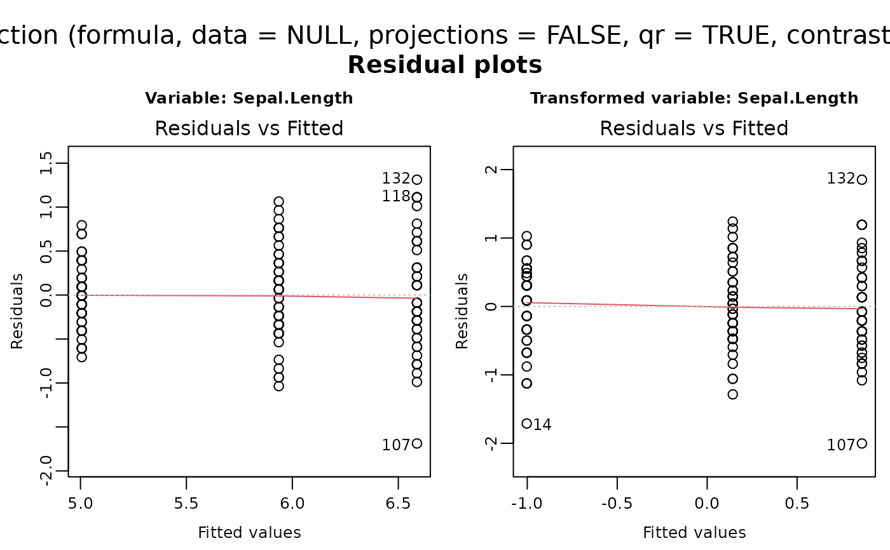
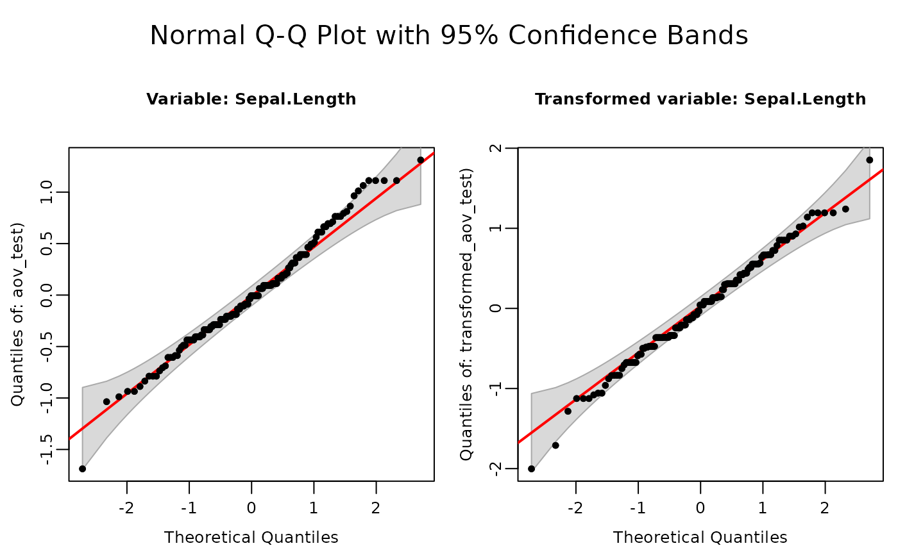
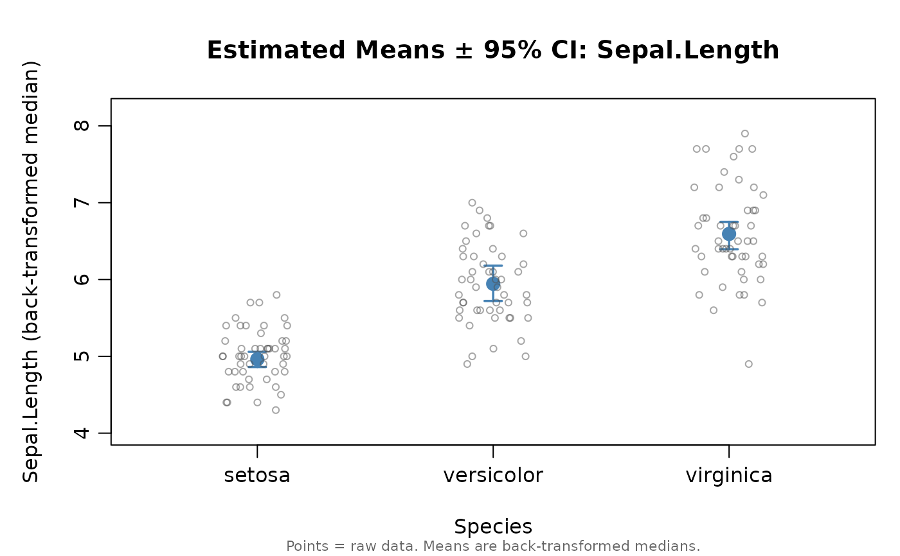

Perform multiple aov() functions with optional data transformation, inspection and Post Hoc test.
Source: R/faov.R
f_aov.RdPerforms an Analysis of Variance (ANOVA) on a given dataset with options for (Box-Cox)
transformations, normality tests, and post hoc analysis. The omnibus table
is computed with Type II Sums of Squares via
Anova, which is order-invariant for the main effects in
unbalanced designs (default summary(aov()) uses Type I SS, where the
main-effect p-values depend on the order in which terms appear in the
formula). Type II also aligns with the model-based emmeans post hoc
tests, so the omnibus table and the pairwise comparisons cannot tell
mismatched stories on unbalanced data. Several response parameters can be
analysed in sequence and the generated output can be in various formats
('Word', 'pdf', 'Excel').
Usage
f_aov(
formula,
data = NULL,
diagnostic_plots = TRUE,
effect_plots = TRUE,
contrast_plots = FALSE,
ANCOVA = FALSE,
transformation = TRUE,
force_transformation = NULL,
force_aov = FALSE,
alpha = 0.05,
adjust = "sidak",
post_hoc = NULL,
by = NULL,
anova_type = 2,
intro_text = TRUE,
close_generated_files = FALSE,
open_generated_files = interactive(),
output_type = "default",
save_as = NULL,
save_in_wdir = FALSE,
norm_plots = lifecycle::deprecated(),
interaction_plots = lifecycle::deprecated(),
...
)Arguments
- formula
A formula specifying the model to be fitted. More response variables can be added using
-or+(e.g.,response1 + response2 ~ predictor) to do a sequentialaov()for each response parameter.- data
A data frame containing the variables in the model.
- diagnostic_plots
Logical. If
TRUE, diagnostic residual plots are included in the output files. Default isTRUE.- effect_plots
Logical. If
TRUE, estimated means / interaction plots are included in the output files after the post hoc table. Default isTRUE.- contrast_plots
Logical. If
TRUE, a contrast forest plot is added for each categorical post hoc term: one row per pairwise comparison, showing the estimated difference between two levels with its confidence interval and a reference line at zero. A CI that excludes zero indicates a significant difference; because the interval is on the difference itself, this "excludes zero" reading is exact (it is the same information the compact-letter display encodes, but it also shows the direction and magnitude of each difference). DefaultFALSEbecause the number of pairwise contrasts grows quickly with the number of factor levels (k levels give k(k-1)/2 contrasts); turn it on when you want the detailed pairwise picture. Main-effect and interaction contrast plots are kept separate: main-effect plots are stored asout$y1$contrast_plot_<term>(e.g.contrast_plot_treatment) while interaction cell-contrast plots are stored asout$y1$interaction_contrast_plot_<term>(e.g.interaction_contrast_plot_a_b). Contrast CIs use the sameadjustmethod as the post hoc p-values, so figure and table agree.- ANCOVA
Logical. If
TRUE, prevents automatic conversion of predictors to factors, allowing for Analysis of Covariance (ANCOVA). Default isFALSE.- transformation
Logical or character string. If
TRUE, or if"boxcox"applies af_boxcox()transformation if residuals are not normal. If"bestnormalize", appliesf_bestNormalize()transformation. IfFALSEno transformation will be applied. Default isTRUE. A transformation is kept only when it improves the residual check that triggered it: normality (Shapiro-Wilk, or Anderson-Darling when Shapiro-Wilk is unavailable) or, when only the variance check failed, equal variance (Levene's test). Otherwise the untransformed analysis is reported, the report says so, and the attempt is recorded intransformation_rejected. Responses named inforce_transformationare always transformed.- force_transformation
Character string. A vector containing the names of response variables that should be transformed regardless of the normality test. Default is
NULL- force_aov
Logical. Default
FALSE. A response is skipped (with a message) when its model is saturated: zero residual degrees of freedom, e.g. a fully crossed design with \(n = 1\) in every cell, where no F-test exists. Saturation is judged from the rank of the model matrix, so additive designs with one observation per cell, such as a randomised complete block design (y ~ block + treatment), are analysed normally. Since rfriend 3.2.1,force_aov = TRUEon a saturated model stops with an explanation instead of fitting it, because the F-tests cannot be computed. (Before 3.2.1 the skip also fired for any cell with \(n = 1\).)Error()terms are not supported; usef_lmerwith random effects instead.- alpha
Numeric. Significance level for ANOVA, post hoc tests, and Shapiro-Wilk test. Default is
0.05.- adjust
Character string specifying the method used to adjust p-values for multiple comparisons. Available methods include:
- "tukey"
Tukey's Honest Significant Difference method, appropriate for all pairwise comparisons. Controls family-wise error rate.
- "sidak"
Sidak correction that controls the family-wise error rate. Less conservative than Bonferroni.
- "bonferroni"
Conservative adjustment that multiplies p-values by the number of comparisons.
- "none"
No adjustment. Equivalent to Fisher's LSD method.
- "fdr"
False Discovery Rate adjustment, controls the expected proportion of false positives among significant results.
Default is
"sidak".- post_hoc
Which post hoc tables to build.
NULLorTRUE(default): one table per term, see Details, "Which post hoc tables you get".FALSE: no post hoc. A character vector of model terms: only those tables, e.g.post_hoc = "treatment"(the marginal means of one factor, averaged over the others),post_hoc = c("treatment", "week"), orpost_hoc = "treatment:week"(the cell means of that interaction, every combination compared). A requested term that is not significant is still tabulated, with letters shown as"ns". Misspelled or unknown names stop with a "did you mean" error. The same syntax is used byf_lmer.Leaving blocks out of the post hoc. A block belongs in the model because it removes known variation (soil, bench, day) from the error term, which makes the treatment comparison more precise. Comparing the blocks with each other, however, is not a research question, and block letters invite over-interpretation. So keep the block in the formula and name only the factors you study in
post_hoc:f_aov(y ~ block + treatment, data, post_hoc = "treatment"). The ANOVA table still reports the block effect. With five or more blocks that are a random sample of possible blocks, consider a mixed model instead:f_lmer(y ~ treatment + (1 | block)).- by
NULL(default) or the name of one categorical predictor, used together withpost_hocto get simple effects:post_hoc = "treatment", by = "week"answers "which treatments differ within each week?" withemmeans(model, ~ treatment | week). Letters and the p-value adjustment are computed separately within each level ofby. This makes fewer comparisons than the full cell-means table (for 4 treatments x 3 weeks: 3 x 6 = 18 instead of 66), so each comparison has more power. The table is stored asout$y$post_hoc[["treatment | week"]].byrequirespost_hoc, must not also be named inpost_hoc, and cannot be combined with an interaction term ("a:b") inpost_hoc.- anova_type
Integer, either
2or3. Sums of Squares type for the omnibus ANOVA table computed viaAnova.2(Default)Type II. Order-invariant in unbalanced designs (
drug * doseanddose * druggive the same main-effect p-values), respects the marginality principle (each main effect is tested after all other main effects, ignoring interactions containing it), and is safe with R's default treatment contrasts. Recommended for most unbalanced designs and consistent with theemmeans-based post hoc tests.3Type III. Also order-invariant, but tests each term after all other terms including higher-order interactions. Type III is the SPSS / SAS default. For its main-effect rows to be interpretable as effects averaged across the other factors, the model must be fitted with orthogonal (sum / effect / Helmert / polynomial) contrasts. When
anova_type = 3and the user has not supplied their owncontrastsvia...,f_aovautomatically installscontr.sum/contr.polyfor the duration of the call (the previousoptions("contrasts")is restored on exit). Note that under Type III, when an interaction is significant the main effect rows are conditional on the interaction and should be interpreted with care – the cell means table thatf_aovreports automatically when an interaction is significant remains the appropriate summary.
- intro_text
Logical. If
TRUE, includes a short explanation about ANOVA assumptions in the output file. Default isTRUE.- close_generated_files
Logical. Closes open Excel or Word (NOT pdf) files before writing, depending on the output format. Works on Windows (taskkill), macOS (pkill) and Linux (pkill/soffice). Default
FALSE. WARNING: Always save your work before using this option!!- open_generated_files
Logical. Whether to open the generated output files after creation. Defaults to
TRUEin an interactive R session andFALSEotherwise (e.g. in scripts or automated pipelines). Set toTRUEorFALSEto override this behaviour explicitly.- output_type
Character string specifying the output format. Default is
"default"."default": Returns the object and lets R decide whether to print; auto-prints if unassigned, silent if assigned to a variable. Useprint(result)orplot(result)to display the returned object."console": Forces immediate printing to the console regardless of object assignment."pdf","word","excel": Saves results to a file of the corresponding format. Seesave_as,save_in_wdir, andopen_generated_filesfor file path and opening behavior."rmd": Stores the raw markdown string inside the returned object for use in R Markdown documents.
- save_as
Character string specifying the output file path (without extension). If a full path is provided, output is saved to that location. If only a filename is given, the file is saved in
tempdir(). If only a directory is specified (providing an existing directory with trailing slash), the file is named "dataname_aov_output" in that directory. If an extension is provided the output format specified with option "output_type" will be overruled. Defaults tofile.path(tempdir(), "dataname_summary.pdf").- save_in_wdir
Logical. If
TRUE, saves the file in the working directory. Default isFALSE, this avoid unintended changes to the global environment. Ifsave_aslocation is specifiedsave_in_wdiris overwritten bysave_as.- norm_plots
Deprecated in 3.2.1. Use
diagnostic_plotsinstead. If supplied, its value is passed todiagnostic_plotswith a warning.- interaction_plots
Deprecated in 3.2.1. Use
effect_plotsinstead. If supplied, its value is passed toeffect_plotswith a warning.- ...
Additional arguments forwarded to
aov. The argumentssubset,na.action, andweightsare handled specially: when supplied, they are applied viamodel.frameso that the n=1 cell check, Shapiro-Wilk test, Levene test, optional transformations, residual diagnostics, andemmeanspost hoc tests all see the exact same row set asaov()itself. Any otheraov()arguments (e.g.contrasts,projections,qr,contrasts.arg) are passed through unchanged.
Value
An object of class 'f_aov' containing the fitted model
(aov_test), the Type II omnibus ANOVA table from
Anova (aov_summary), normality and homogeneity
diagnostics, optional transformation results, and the emmeans
post hoc tests, one table per term in out$y$post_hoc (see
Details, "Which post hoc tables you get"). The elements
post_hoc_summary_table, summary_table and cld_text are
deprecated and will be removed in the next release: they now hold
the cell-means table when a significant interaction is tabulated, otherwise
the first table; use post_hoc instead.
Response_Transformed: TRUE when the response was
transformed (Box-Cox or bestNormalize) because the residuals were not normal (or, alone, had unequal variances) and
the transformation was kept (see transformation).
aov_summary: ANOVA table of the untransformed response.
transformed_aov_summary: ANOVA table of the transformed response, or
NULL when no transformation was applied. The printed and reported
result is transformed_aov_summary when Response_Transformed is
TRUE, otherwise aov_summary. To pick it in code:
tab <- if (out$y$Response_Transformed) out$y$transformed_aov_summary else out$y$aov_summary.
When a transformation was tried but not kept, transformation_rejected
records the method, the reason and the p-values before and after.
Using the option output_type, it can also
generate output as R Markdown, 'Word', 'pdf', or 'Excel' files.
Includes print and plot methods for 'f_aov' objects.
Details
The function performs the following steps:
Check if all specified variables are present in the data.
Ensure that the response variable is numeric.
Fit the model with
aovand compute the omnibus ANOVA table with Type II Sums of Squares viaAnova. Type II is used (instead of the default Type I fromsummary(aov())) because Type I main-effect SS depend on the order of terms in the formula in unbalanced designs, whereas theemmeans-based post hoc tests are model-based and therefore order-invariant. Pairing Type I withemmeanscan produce mismatched stories between the omnibus and post hoc tables. Type II keeps both order-invariant and is safe with R's default treatment contrasts (unlike Type III, which would require sum / effect contrasts to be interpretable for main effects).Check normality of residuals using the Shapiro-Wilk test.
If residuals are not normal and
transformation = TRUEapply a data transformation.Post hoc tests with estimated marginal means from
emmeans(), one table per term, with Sidak adjustment (or another option ofadjust =) within each table.
Which post hoc tables you get. With the default
post_hoc = NULL, each term is handled on its own: every significant
interaction of categorical factors gets one cell-means table (all
combinations compared); every categorical main effect gets its own
marginal-means table (emmeans(model, ~ factor)), with letters
"ns" when the term is not significant and an "Interpret with caution"
note when the factor takes part in a significant interaction; numeric
covariates (ANCOVA) get no table, their slope is in the ANOVA table. The
adjust method is applied within each table, and each table has its
own footer with its own number of estimates and tests. Marginal means are
equal-weighted estimated marginal means: every level of the other factors
counts equally, so in unbalanced designs they can differ from the raw group
means. All tables are stored in out$y$post_hoc[[term]] as a list
with emmeans, pairs, cld (the letters), cld_text
(the footer) and caution, the same structure as f_lmer.
When the response was transformed, estimates and CIs are back-transformed
per table (medians on the original scale) and the pairwise contrasts stay on
the transformed scale. Effect plots take their letters from the factor's own
table; a plot that averages over a factor in a significant interaction shows
no letters and says why. Use post_hoc and by to choose the
tables yourself.
Effect and interaction plots. When effect_plots = TRUE,
an estimated marginal means plot (estimate \(\pm\) 95% CI, with jittered
raw data and compact-letter-display labels) is added after the post hoc
table for each categorical predictor. For a significant categorical
interaction, interaction plots are drawn instead: a two-way interaction uses
the x-axis plus colour (both orientations), while three- and four-way
interactions add facet panels for the remaining factor(s), with one plot per
choice of x-axis factor. Interactions involving five or more categorical
factors are not plotted (a warning is issued); consult the post hoc
cell-means table instead. When the response was transformed (Box-Cox or
bestNormalize), the plotted estimates are back-transformed to the original
scale (medians). The plots themselves are kept clean for publication (data,
axes, and legend only); the descriptive label and explanatory caption are
emitted as text above and below each figure in the report. All effect and
interaction plots are ggplot2 objects and are stored in the returned
object (e.g. out$y1$effect_plot_treatment,
out$y1$interaction_plot_a_b_1) so they can be retrieved and customised
afterwards. Matches f_glm.
More response variables can be added using - or + (e.g., response1 + response2 ~ predictor) to do a sequential aov() for each response parameter captured in one output file.
Outputs can be generated in multiple formats ("pdf", "word", "excel" and "rmd") as specified by output_type. The function also closes any open 'Word' files to avoid conflicts when generating 'Word' documents. If output_type = "rmd" is used it is adviced to use it in a chunk with {r, echo=FALSE, results='asis'}
*Non-significant ANOVA results*: When the overall F-test is not significant, f_aov still reports the estimated marginal means table, but with all pairwise comparison letters replaced by *"ns"*. The numeric estimates (and their confidence intervals) are provided because they are often needed for manuscript tables, especially when the response was back-transformed from a Box-Cox or bestNormalize scale - the raw descriptive means and the emmeans values can differ, and it is the emmeans values that correspond to the actual model. The *"ns"* labels signal that pairwise differences should not be interpreted.
This function requires [Pandoc](https://github.com/jgm/pandoc/releases/tag) (version 3.1 or higher), a universal document converter.
Windows: Install Pandoc and ensure the installation folder.
(e.g., "C:/Users/your_username/AppData/Local/Pandoc") is added to your system PATH.macOS: If using Homebrew, Pandoc is typically installed in "/usr/local/bin". Alternatively, download the .pkg installer and verify that the binary's location is in your PATH.
Linux: Install Pandoc through your distribution's package manager (commonly installed in "/usr/bin" or "/usr/local/bin") or manually, and ensure the directory containing Pandoc is in your PATH.
If Pandoc is not found, this function may not work as intended.
Multiple Testing Across Response Variables
When several response variables are analysed in a single call
(e.g. y1 + y2 + y3 ~ treatment), each ANOVA is an independent
null-hypothesis test at level alpha. The post hoc adjustments
(adjust = "sidak", "tukey", etc.) only control the
family-wise error rate within one ANOVA (across pairwise group
comparisons for that response). They do not protect against
the inflation of Type I error across the set of responses.
Practical implication: With \(k\) independent response variables all tested at \(\alpha = 0.05\), the probability of obtaining at least one false positive is \(1 - (1 - 0.05)^k\), which reaches ~40% for \(k = 10\).
When this matters: The risk is highest in exploratory studies where many responses are screened simultaneously without a clear a priori hypothesis for each one. It is less of a concern when each response is a pre-specified primary outcome with its own biological rationale.
Possible remedies:
Bonferroni correction across responses: use
alpha = 0.05 / kwherekis the number of response variables. Conservative but simple.False Discovery Rate (FDR): apply
p.adjust(p_values, method = "fdr")to the vector of per-response ANOVA p-values after the fact.MANOVA: if the responses are correlated and you want a single omnibus test across all of them, use
manova()before interpreting individual ANOVAs.Pre-registration: declare primary vs. exploratory responses before data collection to justify differential correction thresholds.
Author
Sander H. van Delden plantmind@proton.me
Examples
# \donttest{
# The left hand side contains two response variables,
# so two aov's will be conducted, i.e. "Sepal.Width"
# and "Sepal.Length" in response to the explanatory variable: "Species".
f_aov_out <- f_aov(Sepal.Width + Sepal.Length ~ Species,
data = iris,
# Save output in MS Word file (Default is console)
output_type = "word",
# Do bestNormalize transformation for non-normal residual (Default is boxcox)
transformation = "bestnormalize"
)
#> Saving output in: /tmp/RtmplP7rcW/iris_aov_output.docx
# Print output to the console.
print(f_aov_out)
#>
#>
#> ===========================================================
#> ANOVA of response variable: Sepal.Width
#> ===========================================================
#>
#> aov call: Sepal.Width ~ Species
#>
#> Type II ANOVA on Sepal.Width (untransformed) (car::Anova):
#> Anova Table (Type II tests)
#>
#> Response: Sepal.Width
#> Sum Sq Df F value Pr(>F)
#> Species 11.345 2 49.16 < 2.2e-16 ***
#> Residuals 16.962 147
#> ---
#> Signif. codes: 0 ‘***’ 0.001 ‘**’ 0.01 ‘*’ 0.05 ‘.’ 0.1 ‘ ’ 1
#>
#> --- Post hoc Comparisons of: Sepal.Width ---
#>
#> * Species (marginal means) *
#> Letters are compared within this table only.
#> Species emmean.. SE lower.CL upper.CL Letter n
#> setosa 3.428 0.0480391 3.333064 3.522936 a 50
#> virginica 2.974 0.0480391 2.879064 3.068936 b 50
#> versicolor 2.770 0.0480391 2.675064 2.864936 c 50
#> Confidence level used: 0.95
#> Significance level used: α = 0.05
#> P-value and CI adjustment: sidak method for 3 estimates / 3 tests.
#>
#> *Note: Groups in the "Letters" column sharing the same letter are **not** significantly different (α = 0.05). Groups with different letters are significantly different. Sharing a letter indicates insufficient evidence to claim a difference; it does not prove they are identical.*
#>
#>
#>
#> ==========================================================
#> ANOVA of Quantile Normalization (ORQ) TRANSFORMED response variable: Sepal.Length
#> ==========================================================
#>
#> aov call: Sepal.Length ~ Species
#>
#> Type II ANOVA on bestNormalize (Quantile Normalization (ORQ)) transformed Sepal.Length (car::Anova):
#> Anova Table (Type II tests)
#>
#> Response: Sepal.Length
#> Sum Sq Df F value Pr(>F)
#> Species 88.311 2 110.02 < 2.2e-16 ***
#> Residuals 58.995 147
#> ---
#> Signif. codes: 0 ‘***’ 0.001 ‘**’ 0.01 ‘*’ 0.05 ‘.’ 0.1 ‘ ’ 1
#>
#> --- BACK TRANSFORMED Post hoc Comparisons of: Sepal.Length ---
#>
#> * Species (marginal means) *
#> Letters are compared within this table only.
#> Species median (BT) lower.CL upper.CL Letter n
#> virginica 6.593552 6.422851 6.726200 a 50
#> versicolor 5.944039 5.752349 6.135501 b 50
#> setosa 4.961446 4.881046 5.040758 c 50
#> Confidence level used: 0.95
#> Significance level used: α = 0.05
#> P-value and CI adjustment: sidak method for 3 estimates / 3 tests.
#>
#> *Note: Groups in the "Letters" column sharing the same letter are **not** significantly different (α = 0.05). Groups with different letters are significantly different. Sharing a letter indicates insufficient evidence to claim a difference; it does not prove they are identical.*
#>
#>
#> Note: 'median (BT)' = back-transformed estimated marginal mean. Back-transforming a mean from a transformed scale returns the MEDIAN on the original scale, not the arithmetic mean. Report these as back-transformed medians. CIs are valid; SE is omitted (asymmetric on original scale).
#>
#>
# Plot residual plots.
plot(f_aov_out)






# Randomised complete block design: the block stays in the model, but
# only the treatment is compared in the post hoc.
wk6 <- subset(plant_trial, time_weeks == 6)
f_aov(height_cm ~ block + treatment, data = wk6, post_hoc = "treatment")
#>
#>
#> ===========================================================
#> ANOVA of response variable: height_cm
#> ===========================================================
#>
#> aov call: height_cm ~ block + treatment
#>
#> Type II ANOVA on height_cm (untransformed) (car::Anova):
#> Anova Table (Type II tests)
#>
#> Response: height_cm
#> Sum Sq Df F value Pr(>F)
#> block 152.88 4 3.2856 0.04889 *
#> treatment 1556.87 3 44.6136 8.774e-07 ***
#> Residuals 139.59 12
#> ---
#> Signif. codes: 0 ‘***’ 0.001 ‘**’ 0.01 ‘*’ 0.05 ‘.’ 0.1 ‘ ’ 1
#> Note: Box-Cox did not improve the normality of the residuals (Shapiro-Wilk p = 0.0375 before, 0.0252 after). The untransformed analysis is reported.
#>
#> --- Post hoc Comparisons of: height_cm ---
#>
#> * treatment (marginal means) *
#> Letters are compared within this table only.
#> treatment emmean.. SE lower.CL upper.CL Letter n
#> high_N 54.56 1.52527 51.23672 57.88328 a 5
#> low_N 47.06 1.52527 43.73672 50.38328 b 5
#> control 43.04 1.52527 39.71672 46.36328 b 5
#> drought 30.22 1.52527 26.89672 33.54328 c 5
#> Confidence level used: 0.95
#> Significance level used: α = 0.05
#> P-value and CI adjustment: sidak method for 4 estimates / 6 tests.
#>
#> *Note: Groups in the "Letters" column sharing the same letter are **not** significantly different (α = 0.05). Groups with different letters are significantly different. Sharing a letter indicates insufficient evidence to claim a difference; it does not prove they are identical.*
#>
#> Warning:
#> Note: Minimum cell size = 1. Levene's Test has very low power with such small groups; interpret its result with caution.
#> Warning:
#> Based on the Shapiro-Wilk Test (0.0375 ≤ 0.05)
#> the residuals are **NOT** normally distributed.
#> ANOVA results can be misleading.
#> A transformation was tried but not kept (see above); resort to other statistical tests.
#>
#>
# Simple effects: which treatments differ within each week?
# illustration only: plants are measured repeatedly, see f_lmer()
pt <- plant_trial
pt$week <- factor(pt$time_weeks)
f_aov(height_cm ~ treatment * week, data = pt,
post_hoc = "treatment", by = "week")
#>
#>
#> ===========================================================
#> ANOVA of response variable: height_cm
#> ===========================================================
#>
#> aov call: height_cm ~ treatment * week
#>
#> Type II ANOVA on height_cm (untransformed) (car::Anova):
#> Anova Table (Type II tests)
#>
#> Response: height_cm
#> Sum Sq Df F value Pr(>F)
#> treatment 2965.34 3 65.6474 < 2.2e-16 ***
#> week 2215.89 2 73.5838 2.399e-15 ***
#> treatment:week 169.52 6 1.8764 0.1043
#> Residuals 722.73 48
#> ---
#> Signif. codes: 0 ‘***’ 0.001 ‘**’ 0.01 ‘*’ 0.05 ‘.’ 0.1 ‘ ’ 1
#>
#> --- Post hoc Comparisons of: height_cm ---
#>
#> * treatment | week (simple effects) *
#> Letters are compared within this table only, separately for each level of week.
#> week treatment emmean.. SE lower.CL upper.CL Letter n
#> 2 high_N 36.96 1.735334 33.47088 40.44912 a 5
#> 2 low_N 32.36 1.735334 28.87088 35.84912 a 5
#> 2 control 24.36 1.735334 20.87088 27.84912 b 5
#> 2 drought 21.72 1.735334 18.23088 25.20912 b 5
#> 4 high_N 45.48 1.735334 41.99088 48.96912 a 5
#> 4 low_N 39.22 1.735334 35.73088 42.70912 ab 5
#> 4 control 35.10 1.735334 31.61088 38.58912 b 5
#> 4 drought 27.72 1.735334 24.23088 31.20912 c 5
#> 6 high_N 54.56 1.735334 51.07088 58.04912 a 5
#> 6 low_N 47.06 1.735334 43.57088 50.54912 b 5
#> 6 control 43.04 1.735334 39.55088 46.52912 b 5
#> 6 drought 30.22 1.735334 26.73088 33.70912 c 5
#> Confidence level used: 0.95
#> Significance level used: α = 0.05
#> P-value and CI adjustment: sidak method for 4 estimates / 6 tests per level of week.
#>
#> *Note: Groups in the "Letters" column sharing the same letter are **not** significantly different (α = 0.05). Groups with different letters are significantly different. Sharing a letter indicates insufficient evidence to claim a difference; it does not prove they are identical.*
#>
#>
#>
# }
#To print rmd output set chunck option to results = 'asis' and use cat().
f_aov_rmd_out <- f_aov(Sepal.Width ~ Species, data = iris, output_type = "rmd")
cat(f_aov_rmd_out$rmd)
#>
#> # Assumptions of ANOVA
#> Checking the assumptions of ANOVA (Analysis of Variance) are critical for ensuring the validity of its results:
#>
#>
#> ## 1. Independence
#> - Observations must be independent both within and between groups. This means that the value of one observation should not influence another.
#> - Independence violations cannot be corrected statistically and invalidate the analysis, making proper experimental design essential.
#>
#> ## 2. Normality
#> - The residuals (errors) of the model are assumed to be normally distributed. This assumption applies to the residuals, not necessarily the raw data.
#> - ANOVA is robust to minor deviations from normality, especially with large and balanced sample sizes. For small or unbalanced samples, violations can lead to **unreliable results**, requiring a data transformation or alternative tests (Welch's ANOVA, Kruskal-Wallis Test).
#> - Normality of the residuals can be tested using a Shapiro-Wilk or Anderson-Darling Test. It can also be graphically assessed using a Box Plot, Q-Q plot or Histogram.
#>
#> ## 3. Homogeneity of Variances (Homoscedasticity)
#> - The variances within each group should be approximately equal (homogeneity of variances). This ensures that the F-test statistic is reliable.
#> - Homogeneity of variances assumption in ANOVA should be tested on the residuals, not directly on the raw data.
#> - Levene's test can be applied to check for homogeneity of variances. It can also be graphically assessed by plotting residuals vs. fitted values and checking for patterns.
#> - If violated, a data transformation or alternative tests (Welch's ANOVA, Kruskal-Wallis Test) are required.
#>
#>
#> ## 4. Additivity (No Unaccounted Systematic Effects)
#> - For models without interaction terms, it is assumed that the effects of different factors are additive. That is, the combined effect of factors can be expressed as the sum of their individual effects.
#> - However, if interaction terms are included in the model, this assumption does not apply because ANOVA then explicitly accounts for potential interactions.
#>
#>
#>
#>
#> # Analysis of: Sepal.Width
#>
#> ## Normality and homoscedasticity of residuals of: Sepal.Width
#> **Levene's test** for homogeneity of residuals: F-Statistic = 0.5902 p-value = 0.5555 . According to 'Levene's Test' (0.5555 > 0.05) residuals do not depart from **equal variance** (homoscedasticity).
#>
#>
#> **Shapiro-Wilk Test** for Normality of residuals: W = 0.9895 p-value = 0.323 . According to 'Shapiro-Wilk Test' (0.323 > 0.05) no significant departure from **normality** was detected
#> for the model residuals; check Q-Q plot.
#>
#>
#> Anderson-Darling normality test : A = 0.495 p = 0.2116
#> According to 'Anderson-Darling test' (0.2116 > 0.05) no significant departure from **normality** was detected
#> for the model residuals; check Q-Q plot.
#>
#> Check the plots in the figure below to assess normality.
#> 
#>
#>
#> ## Observed Descriptives Table of: Sepal.Width ~ Species
#>
#> ----------------------------------------------------------------------------------
#> Species n mean sd se min Q1 median Q3 max
#> ------------ ---- ------- ------- ------- ------- ------- -------- ------- -------
#> setosa 50 3.428 0.379 0.054 2.300 3.200 3.400 3.675 4.400
#>
#> versicolor 50 2.770 0.314 0.044 2.000 2.525 2.800 3.000 3.400
#>
#> virginica 50 2.974 0.322 0.046 2.200 2.800 3.000 3.175 3.800
#> ----------------------------------------------------------------------------------
#>
#> **TIP:** These values represent your actual observed sample characteristics.
#> Use this table for *Methods* sections or Supplementary materials (to describe the sample).
#>
#>
#> **CAUTION:** For statistical inference (significance letters and *p-values*) and reporting
#> main findings in the *Results* section, you **must** use the Emmeans table below.
#>
#>
#> ## ANOVA on Sepal.Width (untransformed)
#>
#>
#>
#> **Table** of aov call: Sepal.Width ~ Species
#> Sums of Squares are computed with **Type II** via `car::Anova()`, which is order-invariant for the main effects in unbalanced designs and consistent with the model-based `emmeans` post hoc tests reported below.
#>
#> --------------------------------------------------------
#> Sum Sq Df F value Pr(>F)
#> --------------- -------- ----- --------- ---------------
#> **Species** 11.34 2 49.16 **4.492e-17**
#>
#> **Residuals** 16.96 147
#> --------------------------------------------------------
#>
#> Type II ANOVA (car::Anova)
#>
#>
#>
#>
#> ## Post Hoc Tests of Sepal.Width
#>
#> Estimated marginal means (emmeans) are model-based means of Sepal.Width. Each table below answers one question and has its own letters, adjustment and footer: a **cell-means** table compares every combination of an interaction, a **marginal-means** table compares the levels of one factor averaged over the others, and a **simple-effects** table compares one factor within each level of another. Marginal means are equal-weighted emmeans: every level of the other factors counts equally, so in unbalanced designs they can differ from the raw group means in the Observed Descriptives Table. The $n$ column is the raw observed count.
#>
#> *Reporting Tips:* Report the table that matches your question. When an interaction is significant, report its cell means (with 95% CIs) and describe how the pattern changes; main-effect letters average over that pattern.
#>
#>
#> ### Post hoc: Species (marginal means)
#>
#> *Letters are compared within this table only.*
#>
#>
#> -----------------------------------------------------------------
#> Species emmean SE lower upper Letter n
#> CL CL
#> ------------ ---------- ------- --------- --------- -------- ----
#> setosa 3.428 0.048 3.333 3.523 a 50
#>
#> virginica 2.974 0.048 2.879 3.069 b 50
#>
#> versicolor 2.770 0.048 2.675 2.865 c 50
#> -----------------------------------------------------------------
#>
#> Confidence level used: 0.95
#> Significance level used: α = 0.05
#> P-value and CI adjustment: sidak method for 3 estimates / 3 tests.
#>
#> *Note: Groups in the "Letters" column sharing the same letter are **not** significantly different (α = 0.05). Groups with different letters are significantly different. Sharing a letter indicates insufficient evidence to claim a difference; it does not prove they are identical.*
#>
#>
#> ## Estimated Means Plot of: Sepal.Width (Species)
#> 
#>
#> *Points are (jittered) raw data; estimates are model estimated marginal means with 95% CI. Groups sharing a letter are not significantly different (α = 0.05); groups with different letters are significantly different. Sharing a letter indicates insufficient evidence of a difference, not proof that the groups are identical.*
#>
